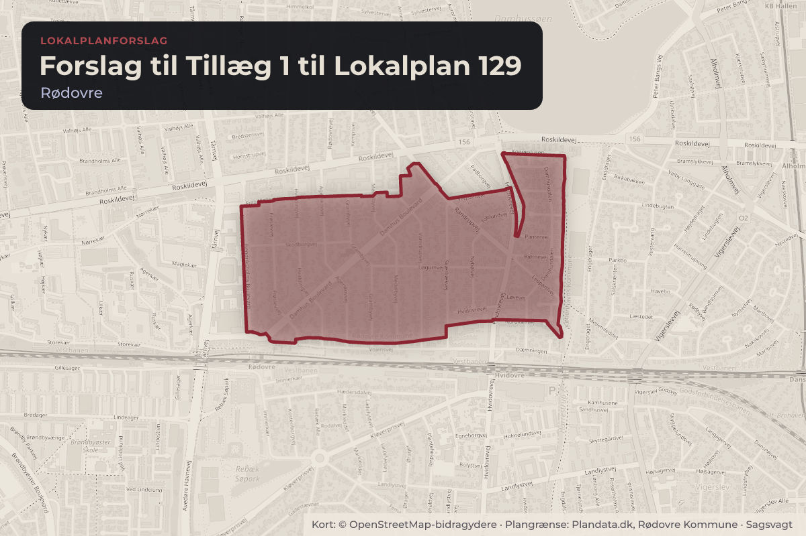
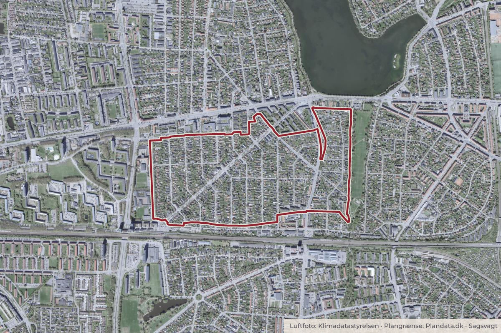

Besluttet 23. september, Økonomiudvalget, Rødovre
Forslag til Tillæg 1 til Lokalplan 129 Hendriksholmkvarteret
Teknisk Forvaltning indstiller, 1. at Forslag til Tillæg 1 til Lokalplan 129 - Hendriksholmkvarteret (del af Randrupvej og Hvidovrevej) fremlægges i offentlig høring i 3 uger, samt 2. at Forslag til Tillæg 1 til Lokalplan 129 ikke miljøvurderes.

Kort: © OpenStreetMap-bidragydere. Plangrænse: Plandata.dk, Rødovre Kommune.

Har du et billede fra Forslag til Tillæg 1 til Lokalplan 129? Send det til os
Kort fortalt
- Forslaget
- Forslag til Tillæg 1 til Lokalplan 129 - Hendriksholmkvarteret (del af Randrupvej og
- Forslag til Tillæg 1 til Lokalplan 129 ikke miljøvurderes.
- Hvem
- Økonomiudvalget, Rødovre Kommune
- Hvornår
- Onsdag 23. september 2026
- Status
- Besluttet. Indstilles godkendt.
Hvad kan du gøre?
- Hold øje med høringen
- Forslaget lægger op til en offentlig høring. Når den åbner, kan alle sende et høringssvar på rk.dk.
Læs hele sagen Kommunens egen tekst
Indstilling
Teknisk Forvaltning indstiller,
1. at Forslag til Tillæg 1 til Lokalplan 129 - Hendriksholmkvarteret (del af Randrupvej og
Hvidovrevej) fremlægges i offentlig høring i 3 uger, samt
2. at Forslag til Tillæg 1 til Lokalplan 129 ikke miljøvurderes.
Beslutning fra By- og Teknikudvalget, 15. september 2026, pkt. 71:
Anbefales.
Sagsfremstilling
I overensstemmelse med intentionen i Kommuneplan 2026 begrænser Tillæg 1 til Lokalplan
129 boligudvikling for 12 ejendomme i hhv. delområde D og E. De 12 villaejendomme er
Randrupvej 6 - 14 samt Hvidovrevej 21 - 33.
De 12 ejendomme er på nuværende tidspunkt i Lokalplan 129 udlagt til blandt bolig- og
erhvervsområde for bebyggelse i 2-3 etager og en bebyggelsesprocent på 60 for den enkelte
ejendom. Med lokalplan-tillægget flyttes de 12 ejendomme til delområde A, som er udlagt til
boligområde for åben-lav boligbebyggelse i 1½ etage og en bebyggelsesprocent på maks. 25
for den enkelte ejendom.
Ændringen understøtter formålet om en mere åben og beplantet boligstruktur, modsat
gældende lokalplans fortætningsmulighed. I overensstemmelse med Kommuneplan 2026, har
tillægget også til formål at understøtte beplantning og biodiversitet, ved at sikre bestemmelser
for nye udpegede bevaringsværdige træer. Desuden er lokalplanens redegørelsesafsnit om
"Forhold til anden planlægning" og "Planens forhold til anden lovgivning" ført ajour.
I forbindelse med tillægget er byggelinjen langs vejene ændret fra 2 m ved bolig- og
erhvervsområder til 5 m ved boligområder. Desuden er vandløbsregulativets byggelinje på 8 m
langs Harrestrup Å noteret i tillægget. Dette har betydning for haverne til Hvidovrevej 21 - 29.
Ved endelig vedtagelse af Tillæg 1 til Lokalplan 129 vil ovenstående ændringer blive
indarbejdet i Lokalplan 129 Hendriksholmkvarteret.
Forslaget til tillæg 1 til Lokalplan 129 er udarbejdet i forlængelse af et høringssvar til
Kommuneplan 2026, som Kommunalbestyrelsen vedtog den 25. august 2026. Høringssvaret
drejede sig om de 5 ejendomme på Randrupvej, som en af ejerne ønskede
planlægningsmæssigt sikret til åben-lav villabebyggelse. Efter en særskilt høring af de 4 øvrige
grundejere blev rammebestemmelserne for de 5 ejendomme ændret ved den endelige
vedtagelse af Kommuneplan 2026. De 7 ejendomme på Hvidovrevej fik allerede i
Kommuneplan 2022 ændret rammebestemmelser fra blandet bolig og erhverv til åben-lav
villabebyggelse. Med tillæg 1 til Lokalplan 129 bliver kommuneplanændringen både fra 2022
og 2026 eksekveret på lokalplanniveau.
Planen skal ikke miljøvurderes
Der er gennemført en miljøscreening af planens indvirkning på miljøet i henhold til Lov om
Miljøvurdering af planer og programmer. Rødovre Kommune har vurderet, at planen ikke skal
miljøvurderes. Miljøscreeningen er vedlagt sagen, som Bilag 2.
Lov- og plangrundlag
Lov om Planlægning
Lov om Miljøvurdering af planer og programmer
Kommuneplan 2026
Økonomiske konsekvenser
Ingen.
Tidsplan
Vedtagelse af forslag: september 2026
Offentlig høring: 3 uger i oktober 2026
Endelig vedtagelse: december 2026
Offentlig bekendtgørelse: december 2026
Beslutning
Indstilles godkendt.
Kilde: Rødovre Kommune, Økonomiudvalget, referat fra mødet onsdag 23. september 2026, punkt 5. Læs den originale sag hos kommunen.